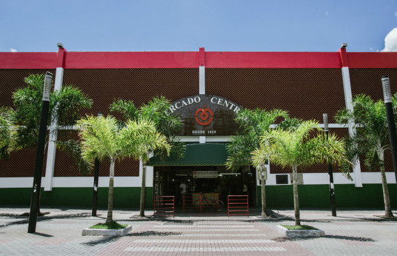

Mercado Central
O Mercado Central é um mercado localizado no Centro de Belo Horizonte.
Foi criado em 7 de setembro de 1929 e seu galpão ocupa um quarteirão inteiro do Centro da cidade.
É um lugar tanto para turistas quanto para moradores comprarem alimentos frescos, tomarem cerveja gelada
e comerem pão de queijo recheado com pernil.